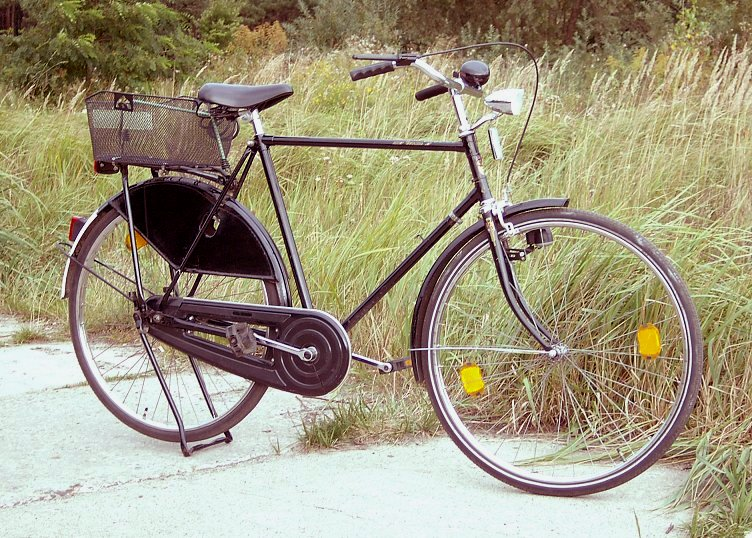
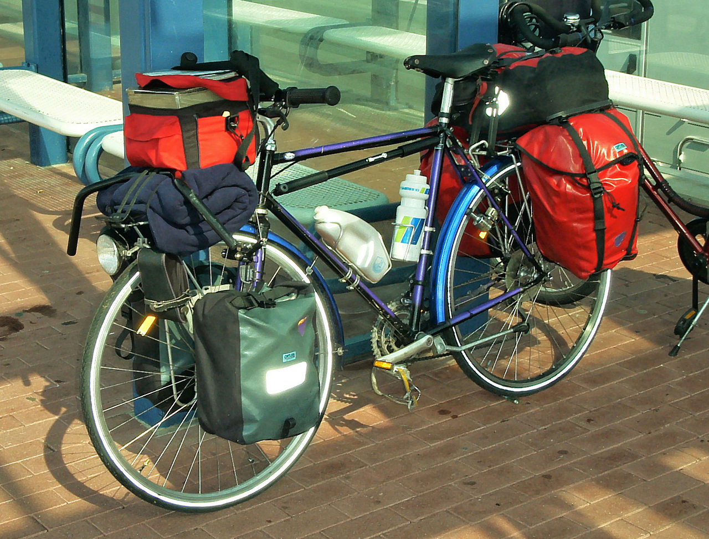

Rower miejski
Tradycyjny rower miejski, tak zwany holender, zbudowany jest najczęściej na kołach 28-calowych (choć spotyka się również rowery z kołami 26- i 27-calowymi), posiada giętą, szeroką kierownicę, krótką ramę i szerokie siodełko umożliwiające jazdę w pozycji wyprostowanej.

Rower górski
nazwa rowerów, których przeznaczeniem jest jazda w terenie trudniejszym, niż pozwalają na to rowery szosowe czy trekingowe, np. górskie ścieżki i szlaki leśne.Podobnie jak w przypadku rowerów górskich i crossowych, tak i tu wyróżnia się dwa typy ram
Rower trekingowy
rower do uprawiania zaawansowanej turystyki rowerowej, polegającej na przemierzaniu długich, często wielodniowych tras, zarówno po drogach asfaltowych, jak i drogach o nawierzchni nieutwardzonej. W porównaniu do rowerów szosowych oraz trekkingowych, rowery MTB są cięższe
